qgam: quantile non-parametric additive models
Matteo Fasiolo, Simon N. Wood, Yannig Goude, and Raphael Nedellec
2017-12-13
This R package offers methods for fitting additive quantile regression models based on splines, using the methods described in Fasiolo et al., 2016.
The main fitting functions are:
-
qgam()fits an additive quantile regression model to a single quantile. Very similar tomgcv::gam(). It returns an object of classqgam, which inherits frommgcv::gamObject. -
mqgam()fits the same additive quantile regression model to several quantiles. It is more efficient that callingqgam()several times, especially in terms of memory usage. -
tuneLearn()useful for tuning the learning rate of the Gibbs posterior. It evaluates a calibration loss function on a grid of values provided by the user. -
tuneLearnFast()similar totuneLearn(), but here the learning rate is selected by minimizing the calibration loss, using Brent method.
A first example: smoothing the motorcycle dataset
Let’s start with a simple example. Here we are fitting a regression model with an adaptive spline basis to quantile 0.8 of the motorcycle dataset.
library(qgam); library(MASS)
if( suppressWarnings(require(RhpcBLASctl)) ){ blas_set_num_threads(1) } # Optional
set.seed(6436)
fit <- qgam(accel~s(times, k=20, bs="ad"),
data = mcycle,
qu = 0.8,
err = 0.1,
control = list("tol" = 0.01)) # <- sloppy tolerance to speed-up calibration ## Estimating learning rate. Each dot corresponds to a loss evaluation.
## qu = 0.8......done# Plot the fit
xSeq <- data.frame(cbind("accel" = rep(0, 1e3), "times" = seq(2, 58, length.out = 1e3)))
pred <- predict(fit, newdata = xSeq, se=TRUE)
plot(mcycle$times, mcycle$accel, xlab = "Times", ylab = "Acceleration", ylim = c(-150, 80))
lines(xSeq$times, pred$fit, lwd = 1)
lines(xSeq$times, pred$fit + 2*pred$se.fit, lwd = 1, col = 2)
lines(xSeq$times, pred$fit - 2*pred$se.fit, lwd = 1, col = 2) 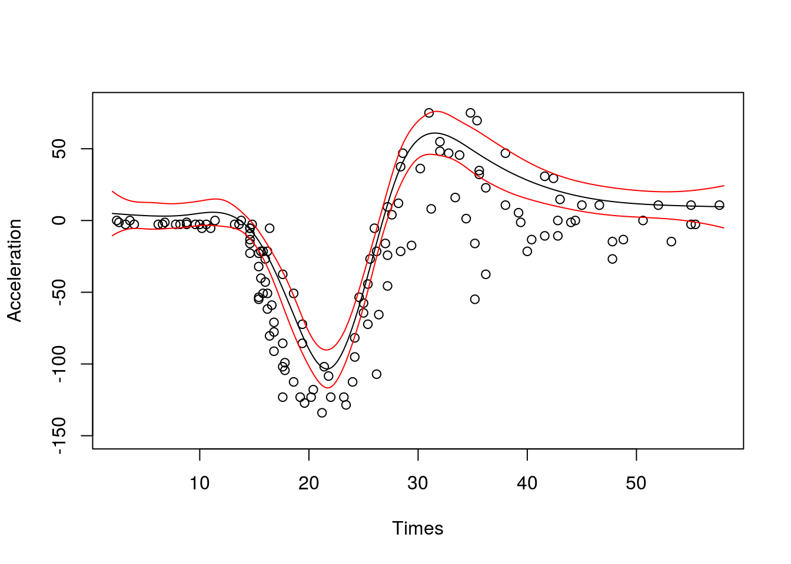qgam automatically calls tuneLearnFast to select the learning rate. The results of the calibrations are stored in fit$calibr. We can check whether the optimization succeded as follows:
check(fit$calibr, 2)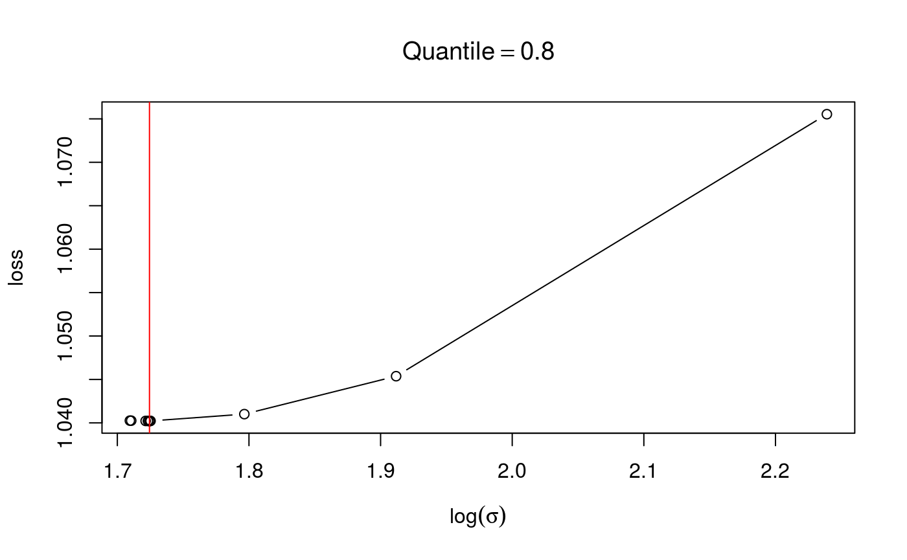 The plot suggest that the calibration criterion has a single minimum, and that the optimizer has converged to its neighbourhood. Alternatively, we could have selected the learning rate by evaluating the loss function on a grid.
set.seed(6436)
cal <- tuneLearn(accel~s(times, k=20, bs="ad"),
data = mcycle,
qu = 0.8,
err = 0.1,
lsig = seq(1, 3, length.out = 20),
control = list("progress" = "none")) #<- sequence of values for learning rate
check(cal)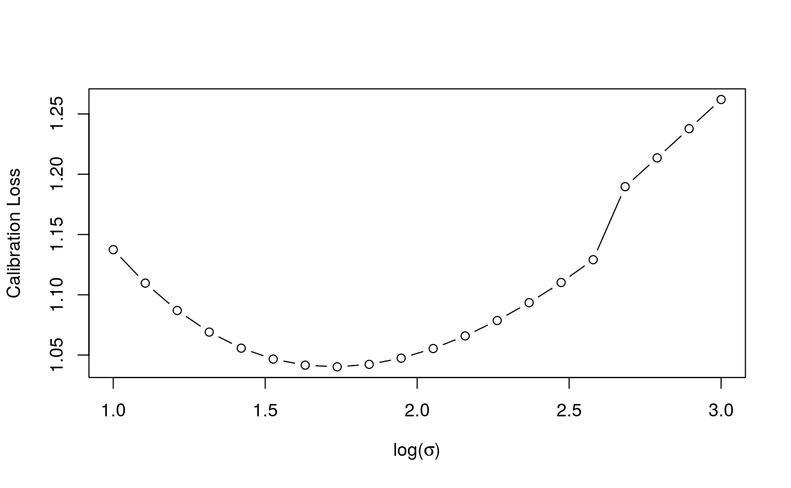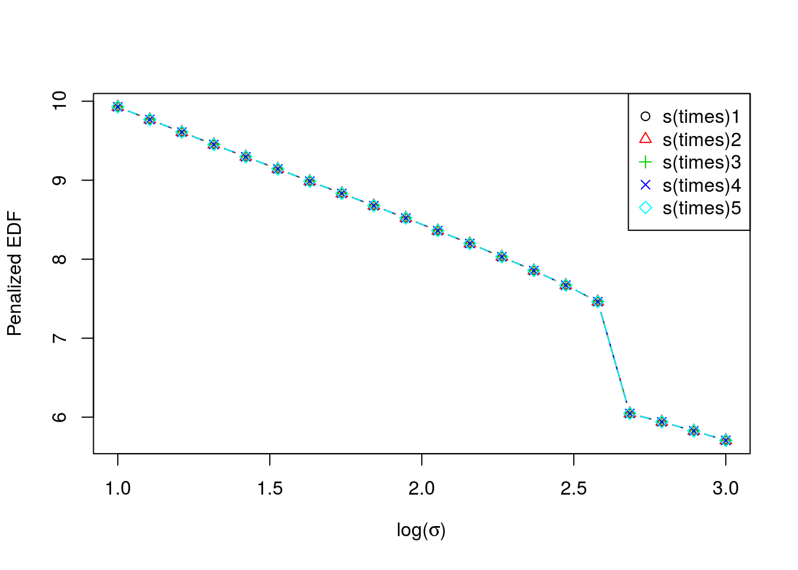 Here the generic check function produces a different output. The first plot is the calibration criterion as a function of \(log(\sigma)\), which should look fairly smooth. The second plot shows how the effective degrees of freedom (EDF) vary with \(log(\sigma)\). Notice that here we are using an adaptive smoother, which includes five smoothing parameters.
We might want to fit several quantiles at once. This can be done with mqgam.
quSeq <- c(0.2, 0.4, 0.6, 0.8)
set.seed(6436)
fit <- mqgam(accel~s(times, k=20, bs="ad"),
data = mcycle,
err = 0.1,
qu = quSeq,
control = list("tol" = 0.01)) # <- sloppy tolerance to speed-up calibration ## Estimating learning rate. Each dot corresponds to a loss evaluation.
## qu = 0.4......done
## qu = 0.6......done
## qu = 0.2.....done
## qu = 0.8......doneTo save memory mqgam does not return one mgcv::gamObject for each quantile, but it avoids storing some redundant data (such as several copies of the design matrix). The output of mqgam can be manipulated using the qdo function.
# Plot the data
xSeq <- data.frame(cbind("accel" = rep(0, 1e3), "times" = seq(2, 58, length.out = 1e3)))
plot(mcycle$times, mcycle$accel, xlab = "Times", ylab = "Acceleration", ylim = c(-150, 80))
# Predict each quantile curve and plot
for(iq in quSeq){
pred <- qdo(fit, iq, predict, newdata = xSeq)
lines(xSeq$times, pred, col = 2)
}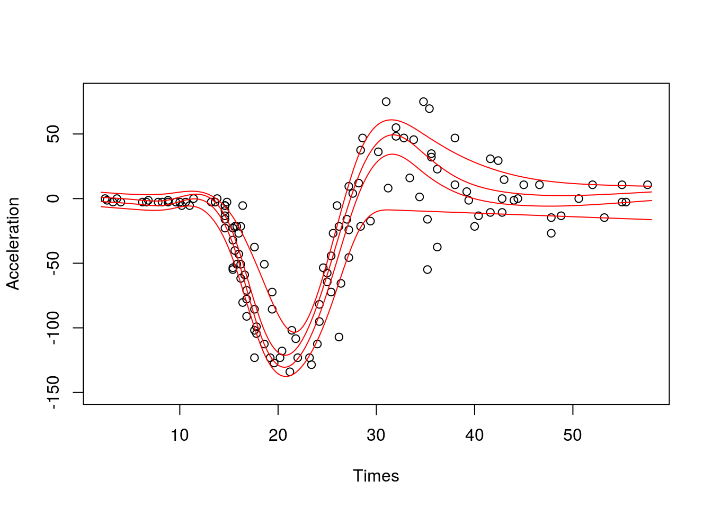
Using qdo we can print out the summary for each quantile, for instance:
# Summary for quantile 0.4
qdo(fit, qu = 0.4, summary)##
## Family: elf
## Link function: identity
##
## Formula:
## accel ~ s(times, k = 20, bs = "ad")
##
## Parametric coefficients:
## Estimate Std. Error z value Pr(>|z|)
## (Intercept) -30.162 1.914 -15.76 <2e-16 ***
## ---
## Signif. codes: 0 '***' 0.001 '**' 0.01 '*' 0.05 '.' 0.1 ' ' 1
##
## Approximate significance of smooth terms:
## edf Ref.df Chi.sq p-value
## s(times) 9.069 10.43 785.2 <2e-16 ***
## ---
## Signif. codes: 0 '***' 0.001 '**' 0.01 '*' 0.05 '.' 0.1 ' ' 1
##
## R-sq.(adj) = 0.78 Deviance explained = 67.2%
## -REML = 609.3 Scale est. = 1 n = 133Notice that here the generic function summary is calling summary.gam, because summary.qgam has not been implemented yet. Hence one cannot quite rely on the p-value provided by this function, because their are calculated using result that apply to parametric, not quantile, regression.
Dealing with heteroscedasticity
Let us simulate some data from an heteroscedastic model.
set.seed(651)
n <- 5000
x <- seq(-4, 3, length.out = n)
X <- cbind(1, x, x^2)
beta <- c(0, 1, 1)
sigma = 1.2 + sin(2*x)
f <- drop(X %*% beta)
dat <- f + rnorm(n, 0, sigma)
dataf <- data.frame(cbind(dat, x))
names(dataf) <- c("y", "x")
qus <- seq(0.05, 0.95, length.out = 10)
plot(x, dat, col = "grey", ylab = "y")
for(iq in qus){ lines(x, qnorm(iq, f, sigma)) }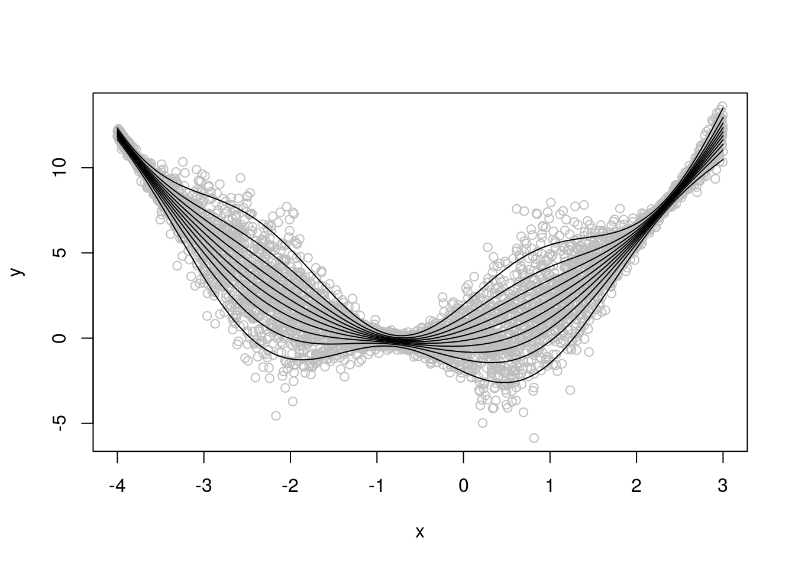
We now fit ten quantiles between 0.05 and 0.95, using a quantile GAM with scalar learning rate. To speed up things I’ve pre-computed the learning rate. Just comment out the line lsig = lsig, if you want to re-computed it.
lsig <- c(-0.96, -0.83, -0.69, -0.63, -0.76, -0.76, -0.89, -0.85, -0.99, -1.06)
fit <- mqgam(y~s(x, k = 30, bs = "cr"),
data = dataf,
lsig = lsig,
qu = qus, err = 0.05)
qus <- seq(0.05, 0.95, length.out = 10)
plot(x, dat, col = "grey", ylab = "y")
for(iq in qus){
lines(x, qnorm(iq, f, sigma), col = 2)
lines(x, qdo(fit, iq, predict))
}
legend("top", c("truth", "fitted"), col = 2:1, lty = rep(1, 2))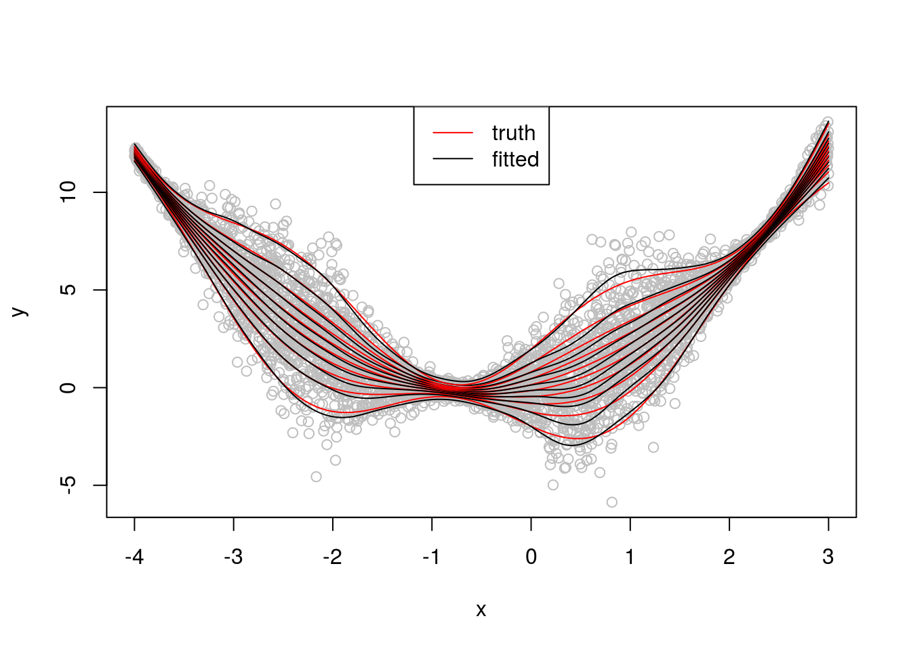
The fitted quantiles are close to the true ones, but their credible intervals don’t vary much with x. Indeed, let’s look at intervals for quantile 0.95.
plot(x, dat, col = "grey", ylab = "y")
tmp <- qdo(fit, 0.95, predict, se = TRUE)
lines(x, tmp$fit)
lines(x, tmp$fit + 3 * tmp$se.fit, col = 2)
lines(x, tmp$fit - 3 * tmp$se.fit, col = 2)
We can do better by letting the learning rate vary with the covariate. In particular, we can use an additive model for quantile location and one for the scale or learning rate. Here I am fixing the intercept of the additive model for the learning rate, in order to avoid calibrating it. Just comment out lsig=-1.16 if you want to re-estimate it.
fit <- qgam(list(y~s(x, k = 30, bs = "cr"), ~ s(x, k = 30, bs = "cr")),
data = dataf, qu = 0.95, err = 0.05, lsig = -1.16)
plot(x, dat, col = "grey", ylab = "y")
tmp <- predict(fit, se = TRUE)
lines(x, tmp$fit[ , 1])
lines(x, tmp$fit[ , 1] + 3 * tmp$se.fit[ , 1], col = 2)
lines(x, tmp$fit[ , 1] - 3 * tmp$se.fit[ , 1], col = 2)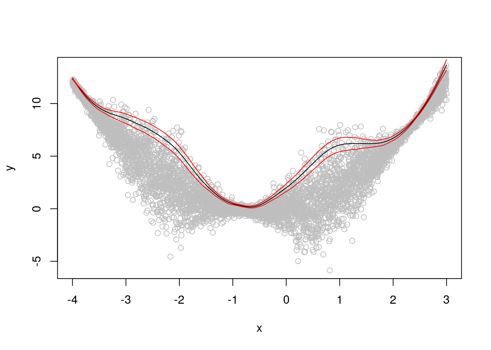
Now the credible intervals correctly represent the underlying uncertainty.
Model checking
The qgam package provides some functions that can be useful for model checking. In particular, we have:
-
cqcheckif we are fitting, say, quantile 0.2 we expect roughly \(20\%\) of the observations to fall below the fitted quantile. This function produces some plots to verify this. -
cqcheckIinteractive version ofcqcheckI. Implemented using theshinypackage. Not demonstrated here, but see?cqcheckI. -
check.qgamprovides some diagnostics regarding the optimization. Mainly based togam.check. -
check.learndiagnostic checks to verify that the learning rate selection went well. It can be used on the output oftuneLearn. -
check.tuneLearnsimilar tocheck.learn, but it can be used on the output oftuneLearnor on the$calibrslot of aqgamobject.
We start by illustrating the cqcheck function. In particular, let us consider the additive model: \[
y \sim x+x^2+z+xz/2+e,\;\;\; e \sim N(0, 1)
\] We start by simulating some data from it.
library(qgam)
set.seed(15560)
n <- 1000
x <- rnorm(n, 0, 1); z <- rnorm(n)
X <- cbind(1, x, x^2, z, x*z)
beta <- c(0, 1, 1, 1, 0.5)
y <- drop(X %*% beta) + rnorm(n)
dataf <- data.frame(cbind(y, x, z))
names(dataf) <- c("y", "x", "z")We fit a linear model to the median and we use cqcheck produce a diagnostic plot.
qu <- 0.5
fit <- qgam(y~x, qu = qu, data = dataf)## Estimating learning rate. Each dot corresponds to a loss evaluation.
## qu = 0.5........donecqcheck(obj = fit, v = c("x"), X = dataf, y = y) 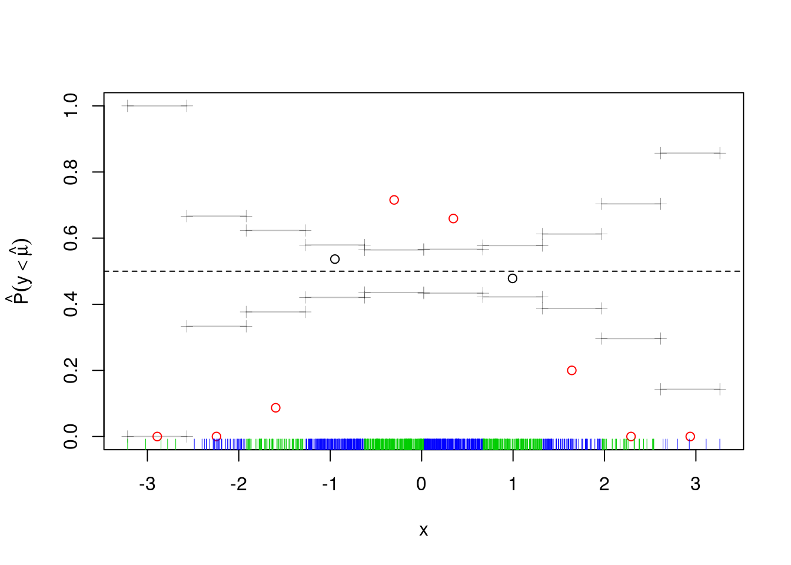
The cqcheck function takes a qgam object as input and it predicts the conditional quantile using the data in X. Then it bins the responses y using the corresponding values of v and it calculates, for every bin, what fraction of responses falls below the fitted quantile. Given that we are fitting the median, we would expect that around \(50\%\) of the point falls below the fit. But, as the plot shows, this fraction varies widely along x. There is clearly a non-linear relation between the quantile location and x, hence we add a smooth for x.
fit <- qgam(y~s(x), qu = qu, data = dataf)## Estimating learning rate. Each dot corresponds to a loss evaluation.
## qu = 0.5............donecqcheck(obj = fit, v = c("x"), X = dataf, y = y)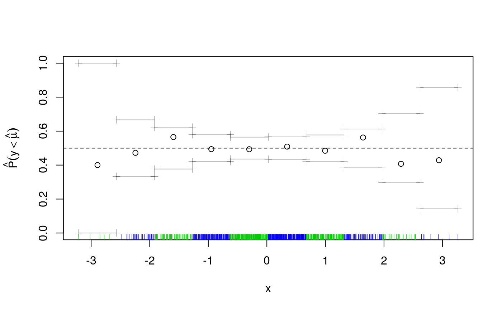
The deviations from the theoretical quantile (\(0.5\)) are much reduced, but let’s look across both x and z.
cqcheck(obj = fit, v = c("x", "z"), X = dataf, y = y, nbin = c(5, 5))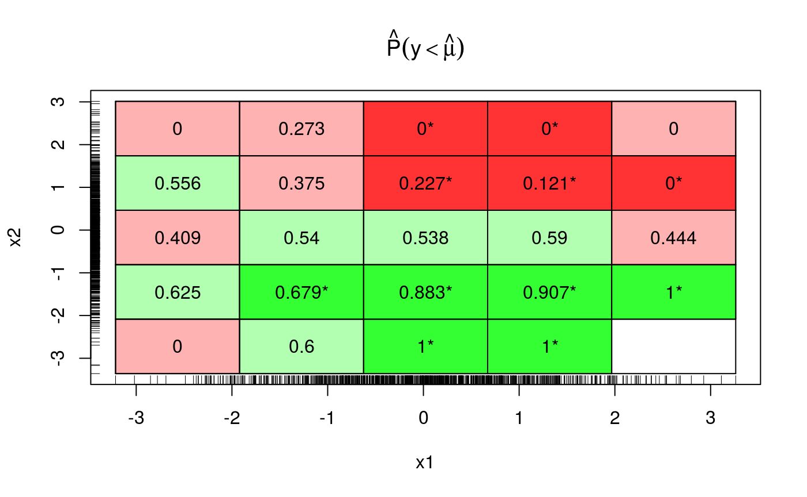
This plot uses binning as before, if a bin is red (green) this means that the fraction of responses falling below the fit is smaller (larger) than 0.5. Bright colours means that the deviation is statistically significant. As we move along z (x2 in the plot) the colour changes from green to red, so it make sense drawing a marginal plot for z:
cqcheck(obj = fit, v = c("z"), X = dataf, y = y, nbin = c(10))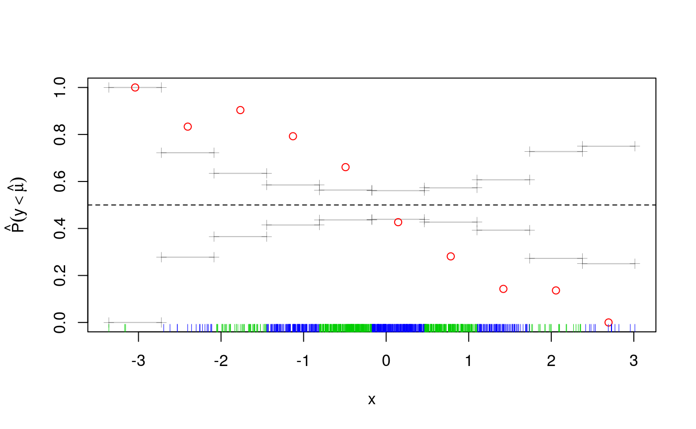
We are clearly missing an effect here. Given that effect looks pretty linear, we simply add a parametric term to the fit, which seems to solve the problem:
fit <- qgam(y~s(x)+z, qu = qu, data = dataf)## Estimating learning rate. Each dot corresponds to a loss evaluation.
## qu = 0.5.........donecqcheck(obj = fit, v = c("z"))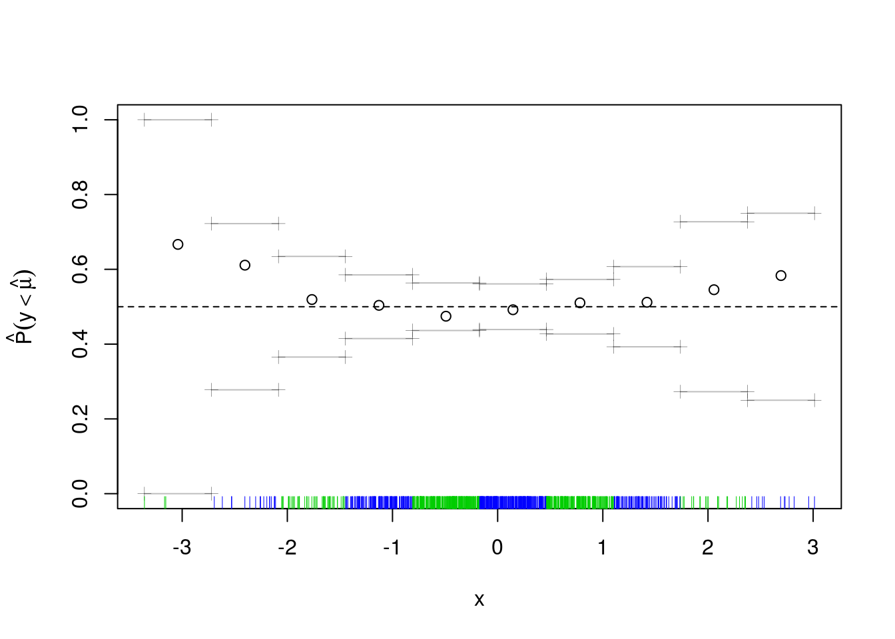
But if we look again across both x and z we see that green prevails on the top-left to bottom-right diagonal, while the other diagonal is mainly red.
cqcheck(obj = fit, v = c("x", "z"), nbin = c(5, 5))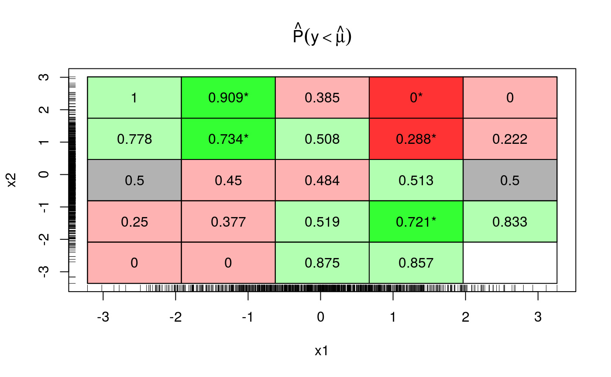
This suggests that adding an interaction between x and z might be a good idea. Indeed, now cqcheck does not signal any problem:
fit <- qgam(y~s(x)+z+I(x*z), qu = qu, data = dataf)## Estimating learning rate. Each dot corresponds to a loss evaluation.
## qu = 0.5........donecqcheck(obj = fit, v = c("x", "z"), nbin = c(5, 5))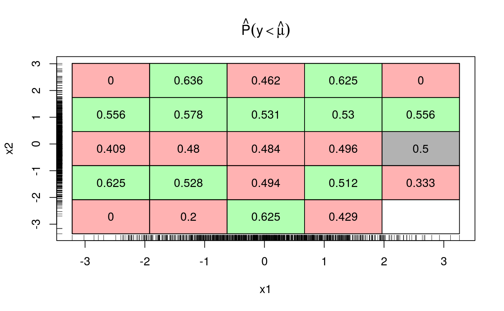
Now that we are fairly satisfied with the model structure, we can, for instance, fit several quantiles by doing:
fit <- mqgam(y~s(x)+z+I(x*z), qu = c(0.2, 0.4, 0.6, 0.8), data = dataf)## Estimating learning rate. Each dot corresponds to a loss evaluation.
## qu = 0.4...........done
## qu = 0.6...........done
## qu = 0.2...........done
## qu = 0.8........doneWe can then check whether the learning rate was selected correctly. Recall that the qgam function calls internally tuneLearnFast, hence we can look at how the calibration went by doing:
check.learnFast(fit$calibr, 2:5)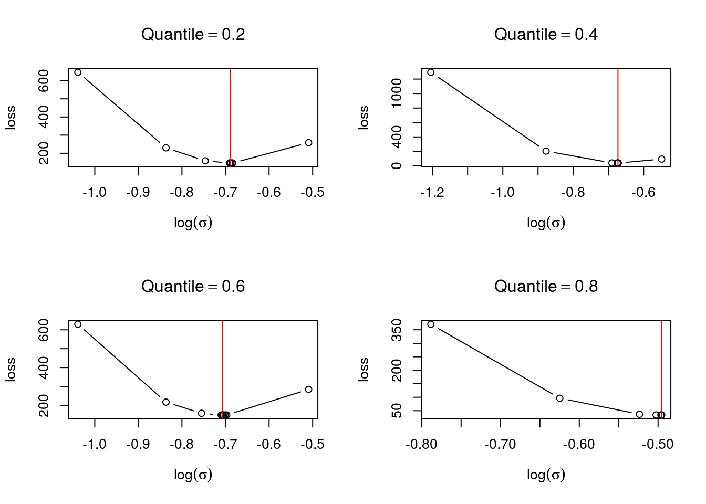
For each quantile, the calibration loss seems to have a unique minimum, which is what one would hope. Objects of class qgam can also be checked using the generic function check, which defaults to check.qgam. To use this function on the output of mqgam, we must use the qdo function:
qdo(fit, 0.2, check)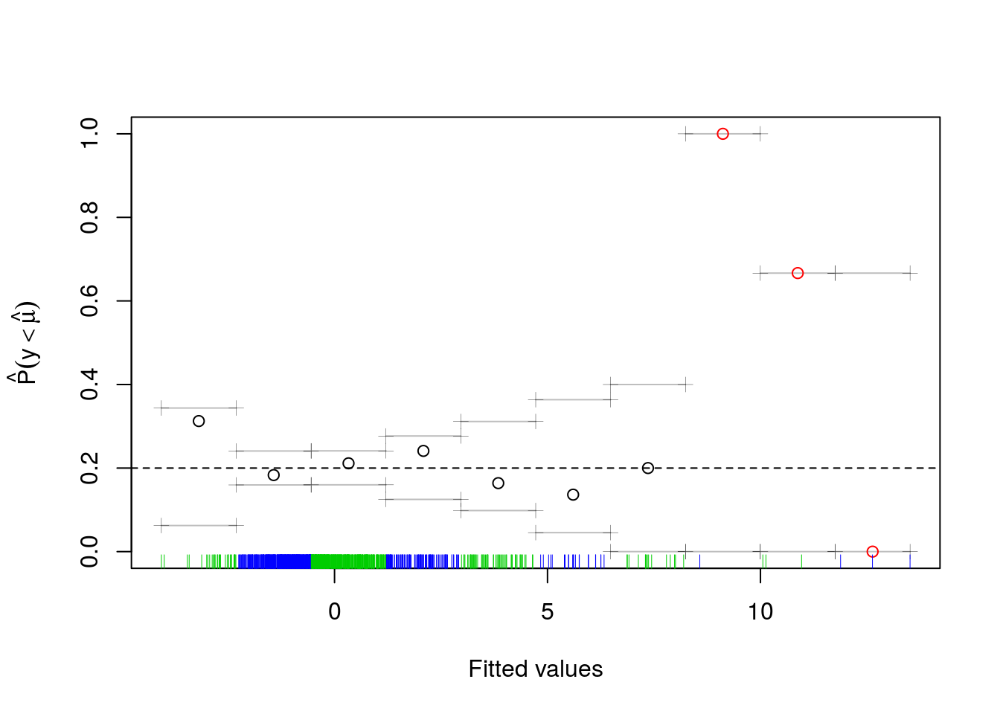
##
## Method: REML Optimizer: outer newton
## full convergence after 4 iterations.
## Gradient range [1.817098e-07,1.817098e-07]
## (score 1718.215 & scale 1).
## Hessian positive definite, eigenvalue range [2.473791,2.473791].
## Model rank = 12 / 12
##
## Basis dimension (k) check: if edf is close too k' (maximum possible edf)
## it might be worth increasing k.
##
## k' edf
## s(x) 9 7.39## NULLThe printed output gives some information about the optimizer used to estimate the smoothing parameters, for fixed learning rate. See ?check.qgam for more information. The plot has been obtained using cqcheck, where each data point has been binned using the fitted values. On the right side of the plot there seems to be some large deviations, but the rug shows that there are very few data points there.
Application to probabilistic electricity load forecasting
Here we consider a UK electricity demand dataset, taken from the national grid website. The dataset covers the period January 2011 to June 2016 and it contains the following variables:
-
NetDemandnet electricity demand between 11:30am and 12am. -
wMinstantaneous temperature, averaged over several English cities. -
wM_s95exponential smooth ofwM, that iswM_s95[i] = a*wM[i] + (1-a)*wM_s95[i]witha=0.95. -
Posanperiodic index in[0, 1]indicating the position along the year. -
Dowfactor variable indicating the day of the week. -
Trendprogressive counter, useful for defining the long term trend. -
NetDemand.48lagged version ofNetDemand, that isNetDemand.48[i] = NetDemand[i-2]. -
Holybinary variable indicating holidays. -
YearandDateshould obvious, and partially redundant.
See Fasiolo et al., 2016 for more details. This is how the demand over the period looks like:
data("UKload")
tmpx <- seq(UKload$Year[1], tail(UKload$Year, 1), length.out = nrow(UKload))
plot(tmpx, UKload$NetDemand, type = 'l', xlab = 'Year', ylab = 'Load')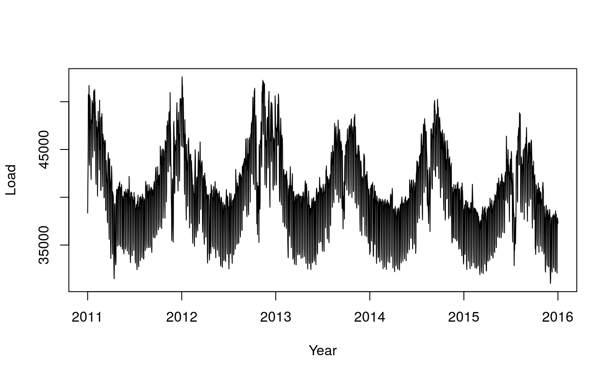
To estimate the median demand, we consider the following model
qu <- 0.5
form <- NetDemand~s(wM,k=20,bs='cr') + s(wM_s95,k=20,bs='cr') +
s(Posan,bs='ad',k=30,xt=list("bs"="cc")) + Dow + s(Trend,k=4) + NetDemand.48 + HolyNotice that we use very few knots for the long term trend, this is because we don’t want to end up interpolating the data. We use an adaptive cyclic smooth for Posan, we’ll explain later why adaptivity is needed here.
Now we tune the learning rate on a grid, on two cores. As the first plot shows, the calibrations loss is minimized at \(\log (\sigma)\approx 6\), the second plot shows how the effective degrees of freedom of each smooth term changes with \(\log (\sigma)\).
set.seed(41241)
sigSeq <- seq(4, 8, length.out = 16)
closs <- tuneLearn(form = form, data = UKload,
lsig = sigSeq, qu = qu, control = list("K" = 20),
multicore = TRUE, ncores = 2, err = 0.1)
check(closs)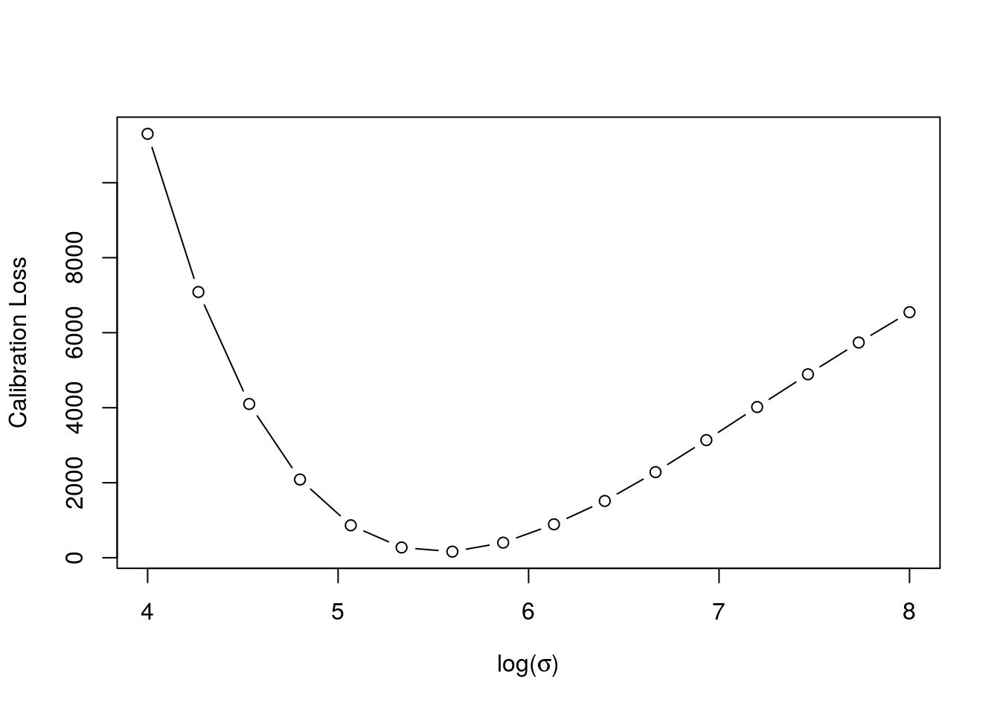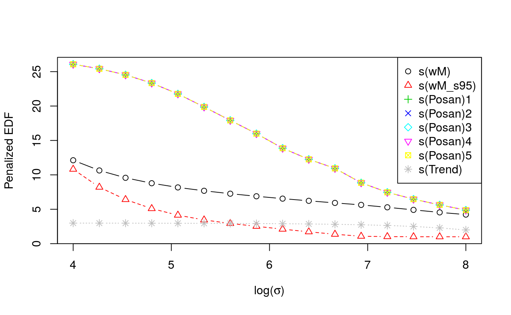
Now let’s fit the model with the learning rate corresponding to the lowest loss and let’s look at the resulting smooth effects.
lsig <- closs$lsig
fit <- qgam(form = form, data = UKload, lsig = lsig, qu = qu, err = 0.1)
plot(fit, scale = F, page = 1)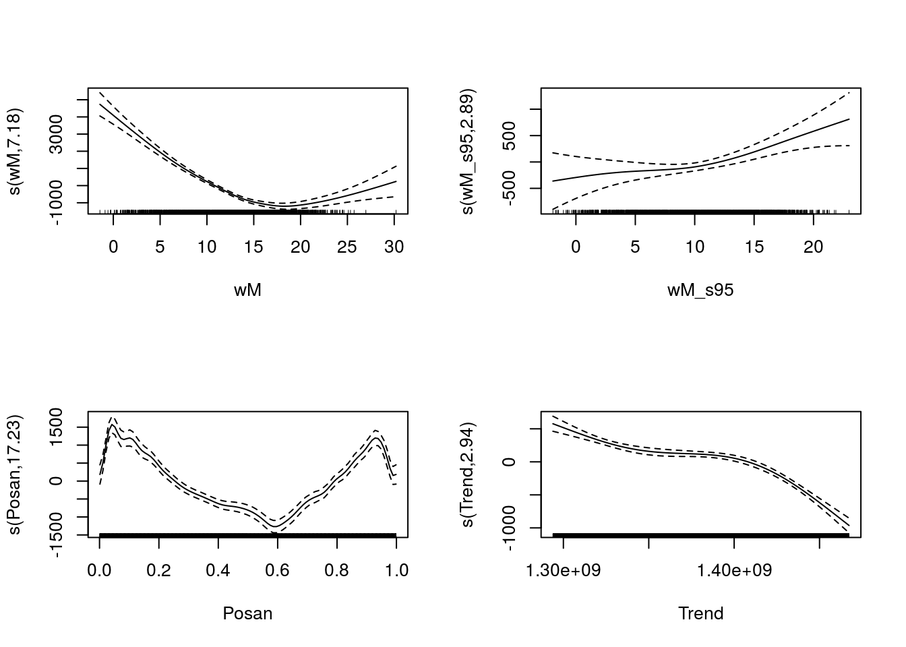
The effect of temperature (wM) is minimized around 18 degrees, which is reasonable. The cyclic effect of Posan has a very sharp drop corresponding to the winter holidays, we used an adaptive smooth in order to have more flexibility during this period. Now we can have a look as some diagnostic plot:
par(mfrow = c(2, 2))
cqcheck(fit, v = c("wM"), main = "wM")
cqcheck(fit, v = c("wM_s95"), main = "wM_s95")
cqcheck(fit, v = c("Posan"), main = "Posan")
cqcheck(fit, v = c("Trend"), main = "Trend", xaxt='n')
axis(1, at = UKload$Trend[c(1, 500, 1000, 1500, 2000)],
UKload$Year[c(1, 500, 1000, 1500, 2000)] )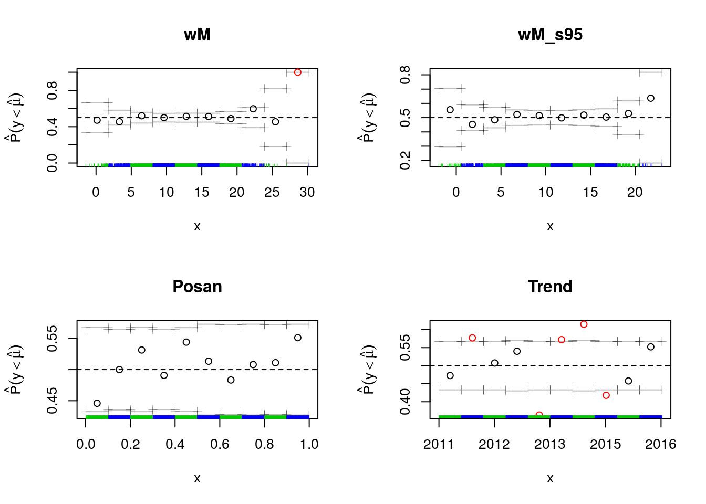
The plots for wM_s95 and Posan don’t show any important deviation from 0.5, the target quantile. Along wM we see a large deviation, but we have essentially no data for very high temperatures. If we look at deviations along the Trend variable, which is just a time counter, we see several important deviations. It would be interesting verifying why these occur (we have no answer currently).
Finally, recall that we can produce 2D versions of these diagnostic plots, for instance:
par(mfrow = c(1, 1))
cqcheck(fit, v = c("wM", "Posan"), scatter = T)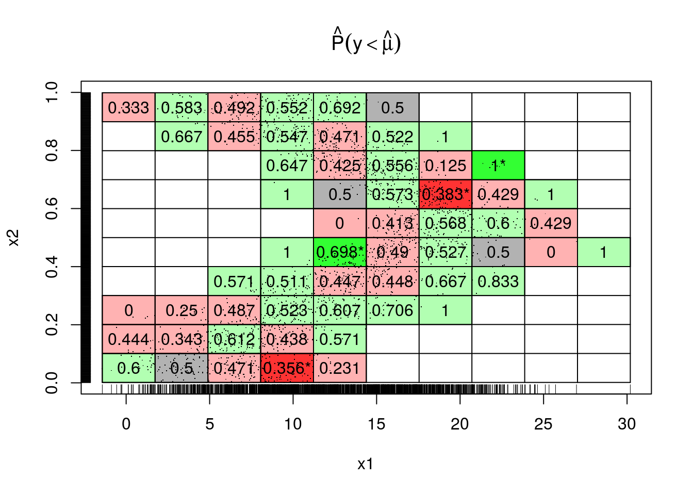
References
- Fasiolo, M., Goude, Y., Nedellec, R. and Wood, S. N. (2017). Fast calibrated additive quantile regression. Available at https://arxiv.org/abs/1707.03307